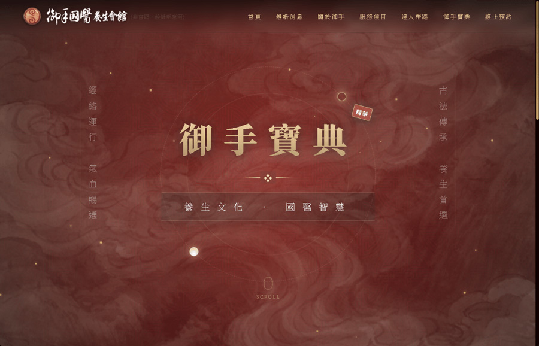
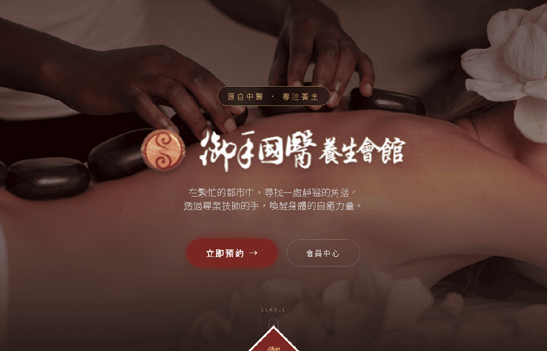
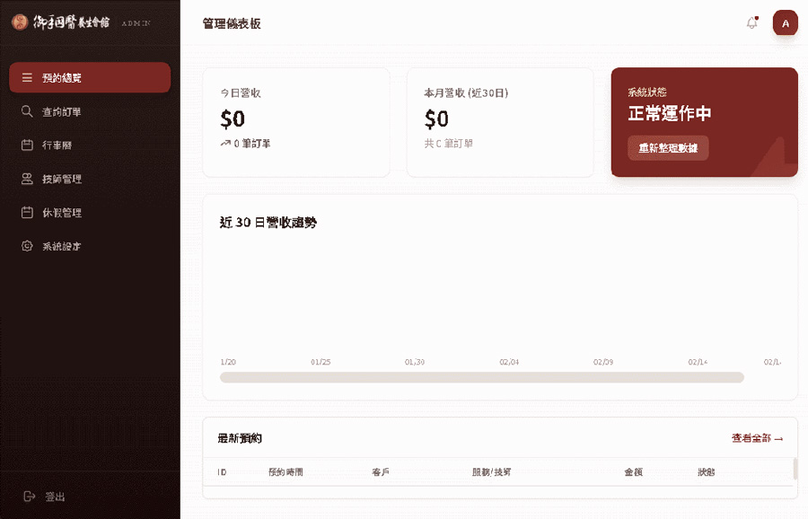
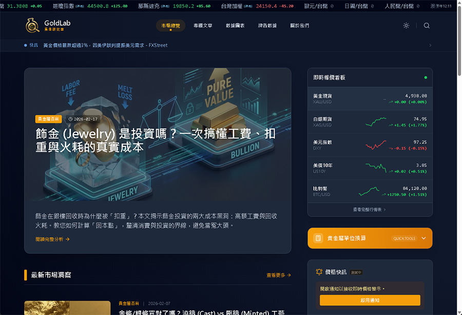
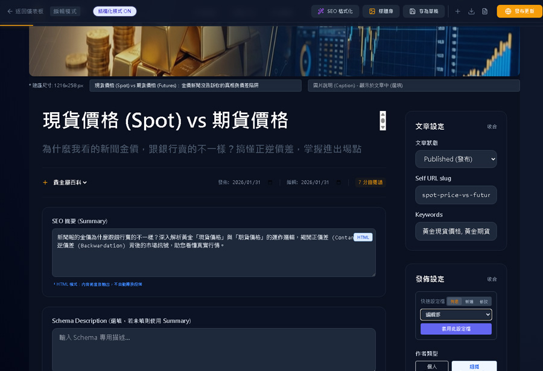
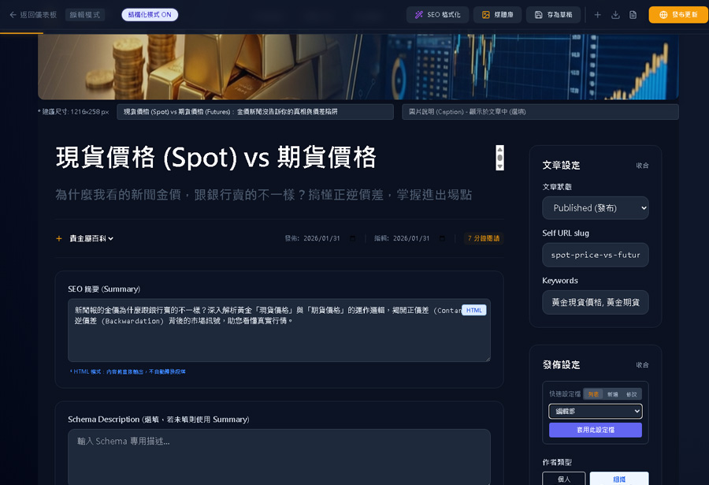
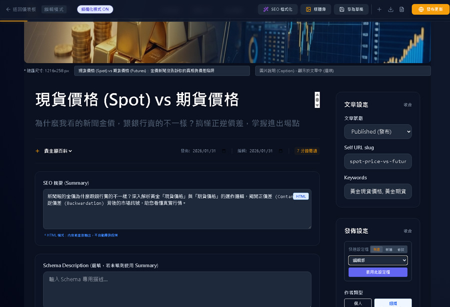
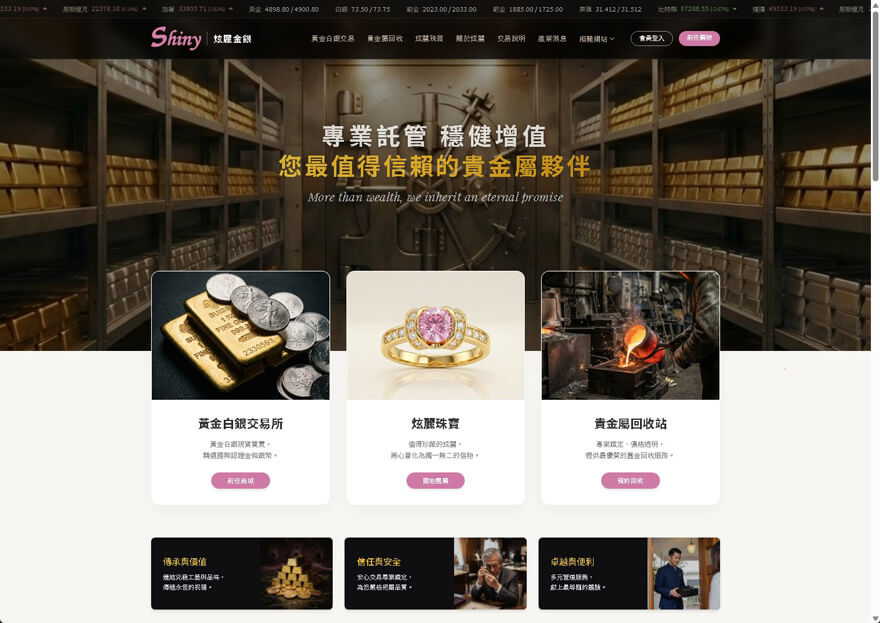
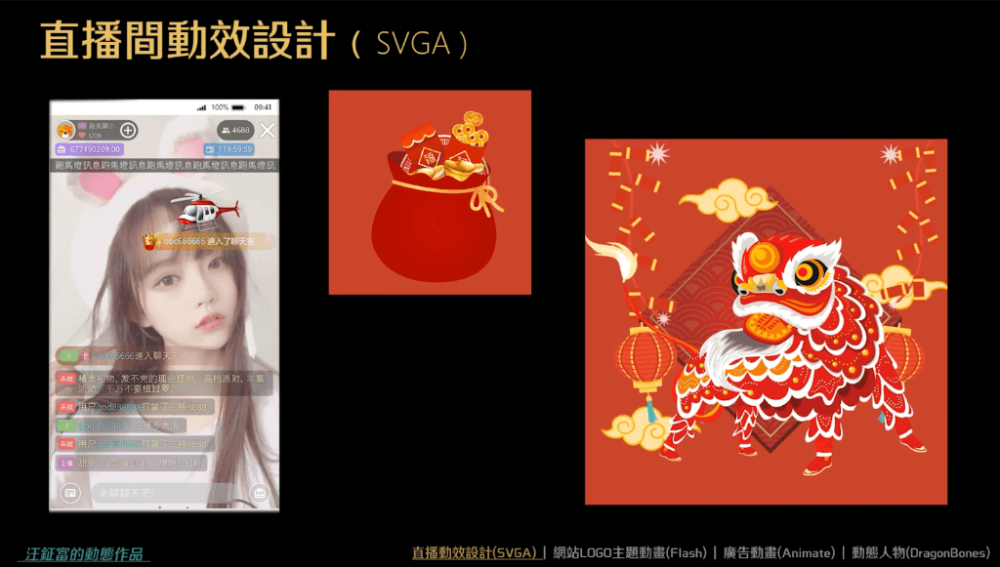
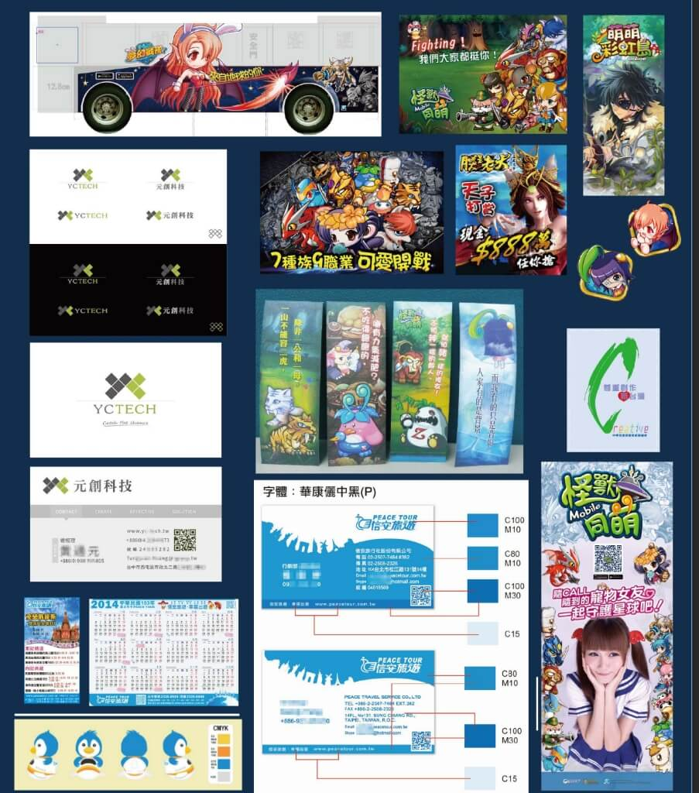

Selected Works
作品列表

穀意 GoodEats (官網)
沉浸式設計 • 動效 • RWD • 一頁式網站 •影片背景

穀意 GoodEats Showcase (開發介紹)
前台/後台開發介紹 • 互動式 UI/UX • 沉浸式設計 • 動效 • RWD • 創意版型




御手國醫-前/後台試做
前台改版設計(御手寶典頁面) • 後台製作(預約/管理…) • RWD • 微互動 • 開發歷程



 


內容型網站完整建置
獨立規劃設計/製作/佈署 • RWD • 資訊型網站 • SEO 策略 • 文章管理後台

形像官網一頁式網站(主頁設計)
需求規劃 • 風格提案 • UI/UX設計 • 網站開發

Motion - Animation Collection
SVGA直播動效設計、廣告banner動畫、動態人物


平面設計作品集
Graphic Design • 廣告設計 • 印刷品設計(立牌、公仔筆、海報…) • 活動頁設計 • Banner設計 • 吉祥物設計 • LOGO及名片設計

SEO內容行銷
研究規劃產出內容 • 取得關鍵字搜尋排名 • AI摘要引用

整理中
Micro-interactions
Lottie 客製化動效製作 • JSON • UI Dynamic

整理中
Animated Game Cards
圖片動態化 • Lottie • JSON • Animation